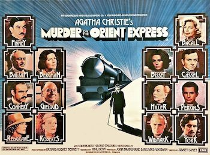

Murder on the Orient Express
Starring: Albert Finney, Lauren Bacall, Ingrid Bergman
Director: Sidney Lumet
Writer: Paul Dehn, Anthony Shaffer
Producer: John Knatchbull, 7th Baron Brabourne, Richard Goodwin
Murder on the Orient Express is a 1974 British mystery film directed by Sidney Lumet, produced by John Brabourne and Richard Goodwin, and based on the 1934 novel of the same name by Agatha Christie.
Trivia
- Won the Academy Award for Best Supporting Actress.
- Selected for the National Board of Review: Top Ten Films.
- Also nominated for: Academy Award for Best Actor; Academy Award for Best Cinematography; Academy Award for Best Writing, Adapted Screenplay; Academy Award for Best Costume Design; and 1 more.
- Based on Murder on the Orient Express (1934 novel by Agatha Christie).
- Dame Agatha Christie had been quite displeased with some film adaptations of her works made in the 1960s, and accordingly was unwilling to sell any more film rights.
- Christie's biographer Gwen Robyns quoted her as saying, "It was well made except for one mistake.
- I wrote that he had the finest mustache in England — but he didn't in the film.
Filming Locations
- Istanbul
- Turkey
- Interiors were filmed at Elstree Studios.
Previous Showings
2 Runs • 1 Festival
All runs on record (2):
- June 12 - 14, 1992w/ Autumn Sonata
- August 14 - 17, 2010Summer 2010w/ Death on the Nile